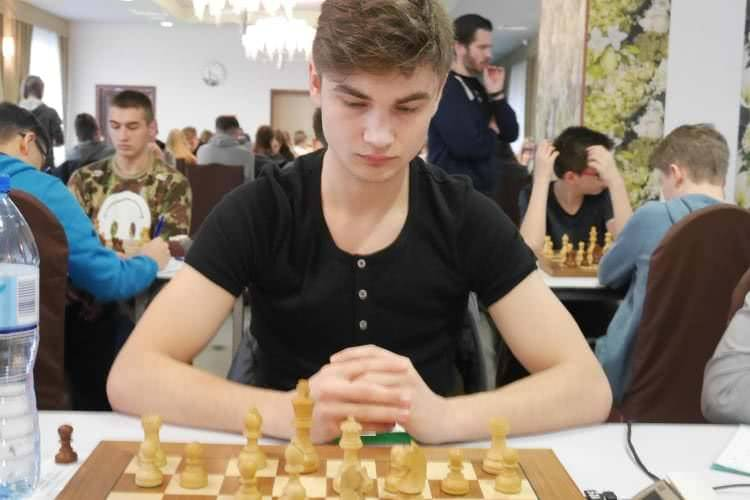

Bartosz Rudecki (ur. 14 kwietnia 1999 w Radomsku) – polski szachista, streamer, znany pod pseudonimem „xntentacion”
z platformy Twitch,gdzie ma ponad 345 000 obserwujących (stan na 08.2026). Posiada on także własny
kanał na platformie YouTube. Jego ranking FIDE w szachach klasycznych wynosi 1939 (stan z 08.2026) –
najwyższy wynik w karierze to 2007 (stan z 04.2017). Brał udział w wielu wydarzeniach szachowych, między innymi
„2021 Bullet Chess Championship All-Star” wraz z innymi gwiazdami streamingu szachowego, takimi jak:
WFM Alexandra Botez, GM Maurice Ashley oraz WGM Qiyu Zhou(ang.), a także z GM Hikaru Nakamurą